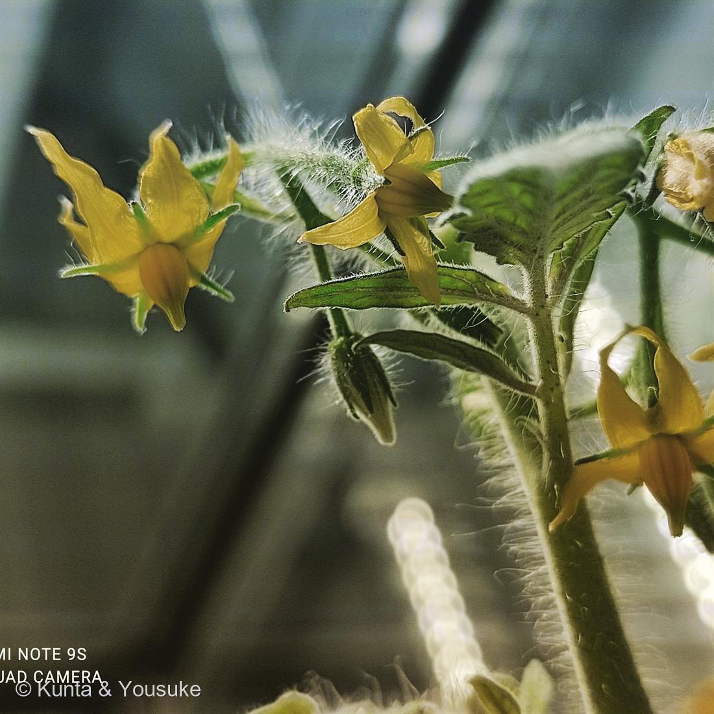

地図を読み込んでいるよ…
🔍 写真も地図も、押しているあいだ拡大して見られるよ（スマホは指を置いてすこし待ってね）。
🌍 の地図＝この子がもともと自生している場所を緑に。南米アンデス地方（ペルー〜エクアドルあたり）。栽培化はメキシコ。
この地図は野生のトマトのふるさと。畑のトマトになったのはメキシコで、そこは塗っていないよ。
⚠ 地図は国（日本と中国だけ県・省）までしか塗れないから、ほんとうの分布より広く見えていることがあるよ。地図はだいたいの場所。正確なところは、上の文を見てね。
トマト
Solanum lycopersicum L.
ナス科 · Solanaceae
品種マイクロトム（Micro-Tom）研究用のモデル矮性品種
名前と学名の由来
- Solanum（ソラヌム）＝ナス属。ラテン語の古い植物名で、由来は諸説ある。鎮静・安らぎを意味する「solamen」から来たという説（ナス科植物の薬効・鎮静作用にちなむ）や、「sol（太陽）」に結びつける説がある。
- lycopersicum（リコペルシクム）＝ギリシャ語の「lykos（オオカミ）」＋「persikon（モモ）」で、「オオカミのモモ」という意味。昔、有毒だと思われていたことにちなむと言われる。古い分類でトマト属を Lycopersicon と呼んでいた名残でもある。
この植物のこと
- ナス科ナス属。原産は南米アンデス地方（ペルー〜エクアドルあたり）で、メキシコで栽培化された。16世紀にヨーロッパへ伝わったが、はじめは有毒だと思われて観賞用だった。
- 花は黄色で、5〜6枚の花びらが星形にそりかえる。中央の黄色い筒は、雄しべの葯（やく）がくっついて筒状になったもの。花粉はその筒の内側にあり、ハチが羽を震わせる振動で飛び出す「振動受粉（バズ・ポリネーション）」で運ばれる。
- 茎も葉もガクも、腺毛（せんもう＝トリコーム）が密に生えていて、さわると独特の青くさい香りがする。この毛は虫や乾燥から身を守るはたらきがある。
- 実は液果で、赤い色はリコピン（カロテノイドの一種）。ビタミンCも多い。よく「野菜」と言われるけれど、植物学的には果実。
- この一株は品種マイクロトム。もとは観賞・家庭菜園用に育成された矮性トマトで、いまは分子遺伝学のモデル植物。背が低く（10〜20cmほど）生育がはやく、せまい場所でたくさん育てられる。矮性はブラシノステロイド合成の DWARF (D) や SELF-PRUNING (SP) などの変異による。変異体コレクションやゲノム情報が整っていて、「トマト版のシロイヌナズナ」のように遺伝子研究に使われる。